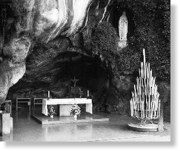
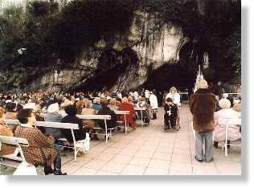
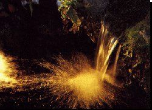
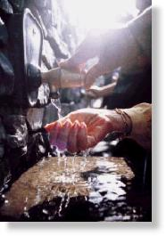
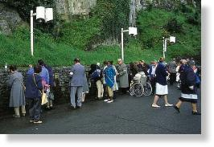
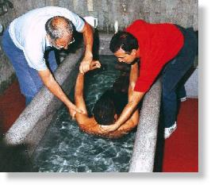
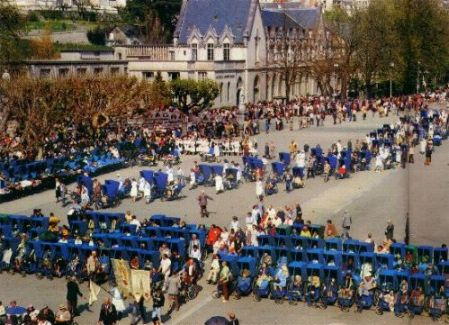
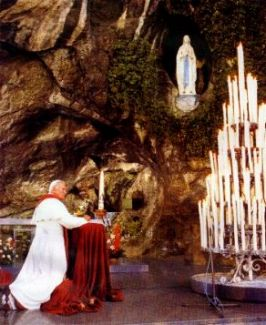

caçoaram dela.
AS MANIFESTAÇÕES CONTINUARAM
 - Segunda-feira dia 15, foi um dia terrível porque
além de sofrer críticas das pessoas, suas próprias colegas
- Segunda-feira dia 15, foi um dia terrível porque
além de sofrer críticas das pessoas, suas próprias colegas
Este procedimento foi também acompanhado por adultos que imaginavam tratar-se de invencionices ou palhaçadas da jovem.
Mas houve pessoas que se interessaram pelo caso da gruta como Madame de Millet. Tinha ouvido falar da Aparição e imaginou que podia ser a sua amiga Elisa Latapié, que tinha morrido em outubro do ano passado. Elisa era muito religiosa e pertencia a irmandade das "Filhas de Maria" e também, era considerada moça de excelentes predicados.
Decidida a conhecer a verdade, Madame de Millet conquistou Luisa, mãe de Bernadete, dando-lhe trabalho e convenceu-a deixar sua filha voltar à gruta, em sua companhia.
As 5 horas da manhã de quinta-feira, 18 de fevereiro de 1858, Madame de Millet em companhia de Antonieta Peyret encontraram-se com Bernadete, que ainda estava dormindo. Depois participaram da primeira Santa Missa do dia e desceram para a gruta.
Antonieta levou consigo caneta e tinteiro do pai, e também papel, para a Visão escrever o seu nome.
Mal começaram a rezar o terço, a vidente murmurou:
- "ELA aí está"!
Terminado o terço, Antonieta entrega-lhe a caneta e o papel. Inocentemente Maria Bernarda leva aqueles instrumentos em direção à Aparição e lhe faz a solicitação combinada:
- "Quer ter a bondade de escrever o seu nome"? A Aparição aproximou-se dela, passando por uma fenda no nicho e da conversa de ambas, nunca se soube nada.
Mais tarde ela contou que, sorrindo, a Aparição lhe disse "que não era preciso escrever" e pediu-lhe que voltasse ali:
 - " Quer ter
a amabilidade de vir aqui durante 15 dias"?
- " Quer ter
a amabilidade de vir aqui durante 15 dias"?
Foi a primeira vez que ouviu a maravilhosa voz da DAMA, e consentiu imediatamente em voltar à gruta para encontrá-la.
Viu também que não era Elisa Latapié.
Foi nesta mesma ocasião que a Visão lhe falou:
 - "Não prometo
tornar-te feliz neste mundo, mas no outro".
- "Não prometo
tornar-te feliz neste mundo, mas no outro".
No caminho de volta, pensativa Madame de Millet interrogou :
- "E se fosse a SANTÍSSIMA VIRGEM MARIA"?
Fez-se um profundo silêncio, ninguém
ousou falar qualquer coisa. Certo é que Madame 
Acontece todavia, que a mãe Luisa começou a ficar curiosa e a querer também ir à gruta com a filha, o mesmo ocorrendo com a tia Bernarda. Apesar de todo o sigilo , na sexta-feira, dia 19, eram 8 pessoas; no sábado, dia 20, eram 30 e no domingo, dia 21 de fevereiro, eram cerca de 100 pessoas.
A Aparição se renovava silenciosa. Sorrindo, contemplava a sua escolhida e a acompanhava durante a reza do terço, fazendo passar com os dedos, as contas de seu rosário, desaparecendo assim que as orações terminavam.
As noticias espalharam-se. São formuladas as mais diversas hipóteses sobre o que vai acontecer durante a quinzena de Aparições. A expectativa é coletiva.
Depois da Aparição de domingo, dia 21, o comissário Jacomet, levou-a para um minucioso interrogatório no qual certificou-se da simplicidade e da sinceridade da menina e ficou sabendo de outros detalhes da Aparição, apesar de intencionalmente querer confundi-la e forçá-la a não voltar à gruta.
Ela contou assim:
- "A DAMA usava um vestido branco, apertado na cintura por uma fita Azul, um véu branco na cabeça que descia até a altura do busto. O vestido era longo e cobria os pés, deixando aparecer só as extremidades, com uma rosa amarela em cada pé, da mesma cor da corrente do terço que trazia na mão direita. Olhava com suavidade e tinha os olhos completamente azuis".
O interrogatório terminou quando populares conseguiram colocar o pai Francisco Soubirous na sala do Comissário para proteger a filha.
As ameaças de Jacomet não tiveram
nenhum efeito sobre ela e nem a intimidou. Partiu 
Nesta época, Bernadete não estava mais na casa da Senhora de Millet, tinha voltado para junto dos pais. No intimo apenas uma dúvida a incomodava: não queria desobedecer e nem criar problemas para o seu pai, pelo fato dele ter afirmado a Jacomet de que ela não voltaria à Massabieille e lembrava-se, por outro lado, que tinha prometido à Aparição estar lá durante quinze dias.
Na volta à escola, depois do meio-dia, sentiu novamente aquela "pressão interior" e não resiste, vai até a gruta. Mas a DAMA não apareceu.
Calada, humildemente voltou para casa em companhia da tia Bernarda. Na tarde deste mesmo dia, vai pela segunda vez ao confessionário encontrar-se com o Padre Pomian e conta-lhe o seu drama de consciência. Ele, depois de ouvi-la, proporciona-lhe a solução que lhe acalmou o íntimo e deu-lhe a certeza do caminho a seguir. Disse o Padre:
- "Não têm o direito de te impedir".
Às 5 horas da manhã do dia seguinte, terça-feira, 23 de fevereiro, seguiu pela estrada rumo a gruta. Cerca de 150 pessoas já a aguardavam e pela primeira vez, destacava-se no meio das boinas e dos capuzes dos pobres, os chapéus dos homens e das senhoras da sociedade.
Como das vezes anteriores, mal iniciou a reza do terço, a Visão apareceu e ela entrou em êxtase. Todos puderam contemplar as reações e a beleza do rosto de Bernadete.
Saíram dali certos de que algo de sobrenatural estava acontecendo, ao mesmo tempo em que surgiram as primeiras notícias sobre curas de doentes e pessoas que se converteram.
Na quarta-feira, dia 24, a quantidade de pessoas era maior e inclusive, até ocorreu uma certa dificuldade para ela chegar na entrada da gruta. Haviam cerca de 300 pessoas ávidas de presenciarem algum fato novo. Algumas eram curiosas, mas a maior parte estava postada respeitosamente, em contrita oração, na certeza de que estavam na presença da MÃE DE DEUS.
Terminada a reza do terço,
Bernadete avançou dois passos, arrastando-se de joelhos e 
 - "Penitência,
Penitência, Penitência! Rezem a DEUS pela conversão dos
pecadores. Vai beijar a terra em penitência pelos
pecadores".
- "Penitência,
Penitência, Penitência! Rezem a DEUS pela conversão dos
pecadores. Vai beijar a terra em penitência pelos
pecadores".
No dia seguinte, a movimentação ao redor de Massabieille começou cedo. Desde as duas horas da manhã as pessoas procuravam se localizarem nos melhoras lugares.
No momento em que Maria Bernarda chegou, havia mais de 350 pessoas. Como de costume, rezou o terço em êxtase, depois entregou a Eléonore Pérard, que estava a seu lado, a vela acesa que sempre levava nos encontros com a Aparição, dando-lhe também seu capuz. A seguir, sobe de joelhos a pequena declividade até o fundo da gruta. De trecho em trecho faz uma parada e beija o chão. Bem em baixo do nicho, onde se encontrava a Visão, parou e conversaram. A seguir arrasta-se de joelhos até o rio Gave. Lá, qualquer coisa a detém e ela volta, agora de pé, para o interior da gruta. Abaixa-se e arranha o chão com as mãos e depois cava, como se quisesse fazer um buraco. O orifício encheu-se de lama que ela recolhe e passa no rosto e come ervas de folhas cheias de amebinos que cresceram no fundo da gruta. Terminada a Aparição, volta com o rosto todo lambuzado de barro, causando de certa forma, consternação ao público.
A todos que lhe perguntava explicou:
- "A DAMA mandou eu beber água na fonte e lavar-me nela. Não vendo água, fui ao Gave. Mas ELA fez-me sinal com o dedo para ir debaixo da rocha. Depois de cavar encontrei a água, era uma lama, tinha tão pouca água que apenas pude colher uma pequena quantidade na cova da mão. Três vezes a joguei fora, de tal maneira estava suja. Na quarta vez colhi a água e tomei. Depois recolhi e também comi um pouco de ervas. ELA me pediu que fizesse isto pelos pecadores".
A tarde, algumas pessoas voltaram
à gruta e entre elas Elèonore Pérard. Observaram o 
A notícia espalhou-se. Todos querem beber da água da fonte que brotou no terreno árido do fundo da gruta. Outros a recolhem e levam para seus parentes necessitados. Muitos comentários surgiram e as noticias de curas ouve-se por todas as partes.
Neste mesmo dia é interrogada pelo Procurador Imperial, senhor Dutour, que a exemplo de Jacomet, tentou por todos os meios dissuadi-la a não voltar à gruta, dizendo que aquilo era ilusão. Mas o Procurador nada conseguiu com Bernadete, ela permaneceu tranquila ao lado de sua mãe e até achou momentos para rir, quando o senhor Dutour mostrando-se nervoso, com a caneta na mão não acertava o buraco do tinteiro para colocá-la.
As fotografias desta página, apresentam de cima para baixo: o Altar para Celebrar Missa na Gruta; fieis sentados em bancos de madeira diante da Gruta; a fonte de água como ficou logo após a limpeza da mesma; primeiro tanque com tres torneiras para uso dos fieis; atualmente a água da fonte está canalizada e existe mais de uma dezena de torneiras para uso dos peregrinos e visitantes; banheira com água da fonte onde as pessoas são imergidas.
Em face do interrogatório, Bernadete responsavelmente antes de tomar qualquer iniciativa foi ouvir a opinião de seus parentes sobre a proibição imposta pelo senhor Dutour: "de não voltar à Massabieille" . Sua tia Bernarda falou:
- "Eu no seu lugar voltava"!

Os enfermos participando da Santa Missa ao ar livre e recebendo a Sagrada Eucaristia.

Sua Santidade o Papa João Paulo II reza na Gruta das Aparições.